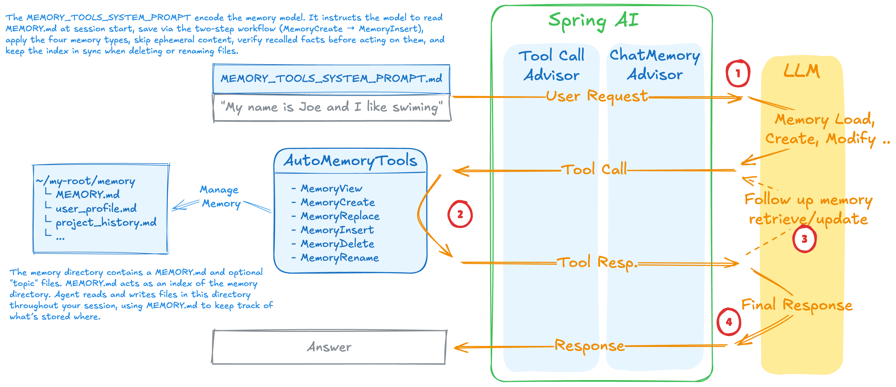

AutoMemoryTools¶
A persistent, file-based long-term memory toolkit for AI agents. Complements the built-in session/conversation history by giving agents a durable store that survives across conversations — user preferences, project context, behavioral feedback, and external references — organized in a dedicated memories directory.

Long-term memory vs. conversation history¶
| Conversation history | AutoMemoryTools (long-term memory) | |
|---|---|---|
| Scope | Current session only | Persists across sessions |
| Storage | In-process (RAM / ChatMemory) |
Files on disk |
| Content | Full message exchange — every turn | Curated facts worth keeping forever |
| Size | Bounded by context window | Grows over time; agent loads selectively |
| Managed by | Spring AI ChatMemory / advisors |
Agent via tool calls |
Use conversation history for the short-term working context of the current task. Use AutoMemoryTools for facts that should still be available in the next conversation, next week, or next month — things the agent would otherwise have to re-learn from scratch every time.
Features:
- Six targeted tools covering the full memory lifecycle (view, create, edit, insert, delete, rename)
- All operations scoped to a sandboxed memories root — path traversal and absolute path injection blocked
- Automatic creation of the memories directory and parent subdirectories
- YAML frontmatter conventions for typed memories (user, feedback, project, reference)
- MEMORY.md index pattern — a single always-loaded file pointing to all memory entries
- UTF-8 throughout; trailing-newline preservation on insert
- Companion system prompt included as a classpath resource
Quick Start¶
AutoMemoryTools memoryTools = AutoMemoryTools.builder()
.memoriesDir("/path/to/memory")
.build();
ChatClient chatClient = chatClientBuilder
.defaultSystem(systemPrompt) // include AUTO_MEMORY_TOOLS_SYSTEM_PROMPT.md
.defaultTools(memoryTools)
.defaultAdvisors(ToolCallAdvisor.builder().build())
.build();
Load the companion system prompt from the classpath (available inside the spring-ai-agent-utils jar):
@Value("classpath:/prompt/AUTO_MEMORY_TOOLS_SYSTEM_PROMPT.md")
Resource memorySystemPrompt;
// Inject the memories root path into the prompt template
chatClientBuilder.defaultSystem(p -> p
.text(toString(memorySystemPrompt))
.param("MEMORIES_ROOT_DIERCTORY", memoryDir));
Memory File Convention¶
Each memory is a Markdown file with a YAML frontmatter header:
---
name: short name
description: one-line description — used to judge relevance in future conversations
type: user | feedback | project | reference
---
Memory content here.
**Why:** reason this was recorded
**How to apply:** when this guidance kicks in
Memory Types¶
| Type | Purpose | When to save |
|---|---|---|
user |
User's role, goals, expertise, preferences | When you learn details about the user's background |
feedback |
How to approach work — corrections AND validated approaches | When the user corrects you or confirms a non-obvious choice |
project |
Ongoing work, decisions, deadlines not in code/git | When you learn who is doing what, why, or by when |
reference |
Pointers to external systems (Linear, dashboards, Slack) | When you learn about external resources and their purpose |
MEMORY.md Index¶
MEMORY.md is the always-loaded index. Every memory file must have a corresponding one-line entry:
- [Title](filename.md) — one-line hook describing what's stored (≤150 chars)
The agent reads MEMORY.md at the start of a session to decide which memory files to load. Keep entries concise — lines after 200 are truncated.
Two-Step Save Workflow¶
Saving a memory always requires two tool calls:
MemoryCreate— write the new memory file with frontmatterMemoryInsertorMemoryStrReplace— add/update the pointer line inMEMORY.md
Available Tools¶
1. MemoryView — Read a File or List a Directory¶
Returns file contents with line numbers, or a two-level directory listing with file sizes.
Parameters:
- path (required) — relative path from the memories root; empty string or "/" for the root
- viewRange (optional) — "start,end" to page through a large file (e.g. "1,50")
// View the index
String index = memoryTools.memoryView("MEMORY.md", null);
// View a specific memory file
String content = memoryTools.memoryView("user_profile.md", null);
// Page through a large file
String page = memoryTools.memoryView("feedback_testing.md", "1,30");
// List the root directory (shows all memory files)
String listing = memoryTools.memoryView("", null);
Output — file:
File: user_profile.md
Lines 1-8 of 8
1 ---
2 name: user profile
3 description: Christian Tzolov — Spring AI lead at Broadcom
4 type: user
5 ---
6
7 Leads the Spring AI project at Broadcom.
8 Prefers concise, direct responses.
Output — directory:
Contents of /:
MEMORY.md (185 bytes)
feedback_testing.md (312 bytes)
user_profile.md (201 bytes)
project/
artemis_launch.md (148 bytes)
2. MemoryCreate — Create a New Memory File¶
Creates a new file with the given content. Errors if the file already exists.
Parameters:
- path (required) — relative path for the new file (e.g. "user_profile.md", "project/sprint.md")
- fileText (required) — full file content including the YAML frontmatter block
String result = memoryTools.memoryCreate("user_profile.md", """
---
name: user profile
description: Christian Tzolov — Spring AI lead at Broadcom
type: user
---
Leads the Spring AI project at Broadcom.
Prefers concise, direct responses without trailing summaries.
""");
// Returns: "Successfully created file: user_profile.md (201 bytes)"
After creating the file, add a pointer to MEMORY.md using MemoryInsert:
memoryTools.memoryInsert("MEMORY.md", currentLineCount,
"- [User Profile](user_profile.md) — Christian Tzolov, Spring AI lead at Broadcom");
What NOT to save (belongs in conversation history, not long-term memory):
- Ephemeral task details, in-progress steps, or current conversation context — these live in the session and disappear naturally
- Code patterns, conventions, or architecture (derivable from the codebase at any time)
- Git history or who changed what (git log is authoritative)
- Debugging recipes (the fix is in the code; the commit message has context)
3. MemoryStrReplace — Replace Exact Text in a File¶
Replaces an exact, unique string in an existing memory file. Rejects the edit if the target string appears more than once.
Parameters:
- path (required) — relative path to the file to edit
- oldStr (required) — exact text to replace (must appear exactly once)
- newStr (required) — replacement text; use "" to delete the matched text
// Update stale content in a memory file
memoryTools.memoryStrReplace("user_profile.md",
"Leads the Spring AI project at Broadcom.",
"Leads the Spring AI project at Broadcom. Also working on agent tooling.");
// Update a description in the frontmatter
memoryTools.memoryStrReplace("user_profile.md",
"description: Christian Tzolov — Spring AI lead at Broadcom",
"description: Christian Tzolov — Spring AI lead, agent tooling focus");
// Update the MEMORY.md pointer when a description changes
memoryTools.memoryStrReplace("MEMORY.md",
"- [User Profile](user_profile.md) — Christian Tzolov, Spring AI lead at Broadcom",
"- [User Profile](user_profile.md) — Christian Tzolov, Spring AI lead, agent tooling focus");
// Delete a line (empty newStr)
memoryTools.memoryStrReplace("feedback.md", "\nOutdated note to remove.", "");
When newStr is empty (deletion), the tool confirms the removal without returning a snippet. Otherwise it returns a numbered snippet around the edited location.
4. MemoryInsert — Insert Text at a Line Number¶
Inserts text after a given 1-indexed line number (0 inserts before the first line). Primary use is appending new pointer entries to MEMORY.md after Step 1 of the two-step save.
Parameters:
- path (required) — relative path to the file to modify
- insertLine (required) — line number after which to insert (0 = before line 1; total line count = append)
- insertText (required) — text to insert
// Append a new entry to MEMORY.md (most common use)
// First, find the current line count via MemoryView
memoryTools.memoryInsert("MEMORY.md", currentLineCount,
"- [Feedback Testing](feedback_testing.md) — always use real DB in integration tests");
// Insert a new section into an existing memory file
memoryTools.memoryInsert("project_auth.md", 6,
"\n**Update 2026-04-05:** legal approved the revised token storage approach.");
The original trailing newline of the file is preserved after the insert.
5. MemoryDelete — Delete a File or Directory¶
Deletes a file or recursively deletes a directory. The memories root itself cannot be deleted.
Parameters:
- path (required) — relative path to the file or directory to delete
// Delete a stale memory file
memoryTools.memoryDelete("project_old_sprint.md");
// Returns: "Successfully deleted file: project_old_sprint.md"
// Delete a subdirectory and all its contents
memoryTools.memoryDelete("archived/");
// Returns: "Successfully deleted directory: archived/"
Important: After deleting a memory file, always remove its entry from
MEMORY.mdusingMemoryStrReplaceto keep the index accurate.
6. MemoryRename — Rename or Move a File/Directory¶
Moves a file or directory to a new path within the memories root. Creates destination parent directories automatically.
Parameters:
- oldPath (required) — current relative path
- newPath (required) — new relative path (must not already exist)
// Rename a file
memoryTools.memoryRename("feedback.md", "feedback_testing.md");
// Returns: "Successfully renamed 'feedback.md' to 'feedback_testing.md'"
// Move into a subdirectory
memoryTools.memoryRename("old_project.md", "archived/old_project.md");
Important: After renaming, update the corresponding link in
MEMORY.mdusingMemoryStrReplace.
Builder Configuration¶
AutoMemoryTools tools = AutoMemoryTools.builder()
.memoriesDir("/path/to/memory") // Path or String; default: /memories
.build();
| Builder method | Type | Default | Description |
|---|---|---|---|
memoriesDir(Path) |
Path |
/memories |
Root directory for all memory files |
memoriesDir(String) |
String |
/memories |
Same, accepts a string path |
The directory is created automatically on build() if it does not exist. The path is normalized in the constructor, so ../relative/paths resolve correctly before the traversal guard is applied.
Security¶
All paths passed to the tools are resolved relative to memoriesDir:
- Absolute paths — rejected immediately (
Error: Absolute paths are not allowed) - Path traversal —
../../etc/passwdis caught after normalization (Error: Path traversal attempt detected)
The check uses Path.isAbsolute() before resolving, then verifies that the normalized result still starts with the normalized memoriesDir.
System Prompt¶
The companion system prompt AUTO_MEMORY_TOOLS_SYSTEM_PROMPT.md is bundled in the jar at classpath:/prompt/AUTO_MEMORY_TOOLS_SYSTEM_PROMPT.md. Include it alongside your main system prompt to instruct the agent on:
- The distinction between long-term memory (AutoMemoryTools) and the current session's conversation history — only facts worth keeping across conversations belong in memory files
- When and how to read, save, update, and delete memories
- The two-step save workflow
- The four memory types and their purposes
- What not to save (ephemeral state, code patterns, git history, fix recipes)
- Staleness checking before acting on recalled memories
The prompt contains one template placeholder: {MEMORIES_ROOT_DIERCTORY} (note the intentional spelling), which should be filled with the configured memories directory path so the agent can reference it in responses.
chatClientBuilder.defaultSystem(p -> p
.text(mainPrompt + "\n\n" + memoryToolsPrompt)
.param("MEMORIES_ROOT_DIERCTORY", memoryDir));
Demo Application¶
See memory-tools-demo for a complete working example. It demonstrates:
- Combining
MAIN_AGENT_SYSTEM_PROMPT_V2.mdandAUTO_MEMORY_TOOLS_SYSTEM_PROMPT.md - Configuring
AutoMemoryToolswith a path fromapplication.properties - Using
ToolCallAdvisorfor recursive tool calling - A console chat loop that builds up memory across turns
Inspiration¶
AutoMemoryTools is a Spring AI implementation of the memory patterns pioneered by Anthropic:
-
Claude Code — Memory — describes how Claude Code uses a file-based memory system (
MEMORY.mdindex, typed memory files, two-step save workflow) to persist knowledge across coding sessions. The file conventions, memory types (user,feedback,project,reference), andMEMORY.mdindex pattern in this library are directly inspired by that design. -
Claude API SDK — Memory Tool — the official Anthropic memory tool specification that defines the six memory operations (
view,create,str_replace,insert,delete,rename) and the sandboxed/memoriesdirectory model. EachAutoMemoryToolsmethod maps one-to-one to an operation in that spec.
AutoMemoryTools brings both designs to any Spring AI application regardless of the underlying model provider.
See Also¶
- Claude Code — Auto-Memory — the file-based memory system this library is modelled after
- Claude API SDK — Memory Tool — the official tool specification
- FileSystemTools — general-purpose file read/write/edit (not scoped to a sandbox)
- TodoWriteTool — task tracking within a single conversation